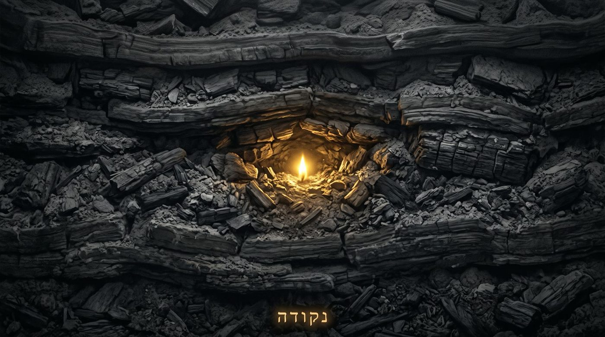
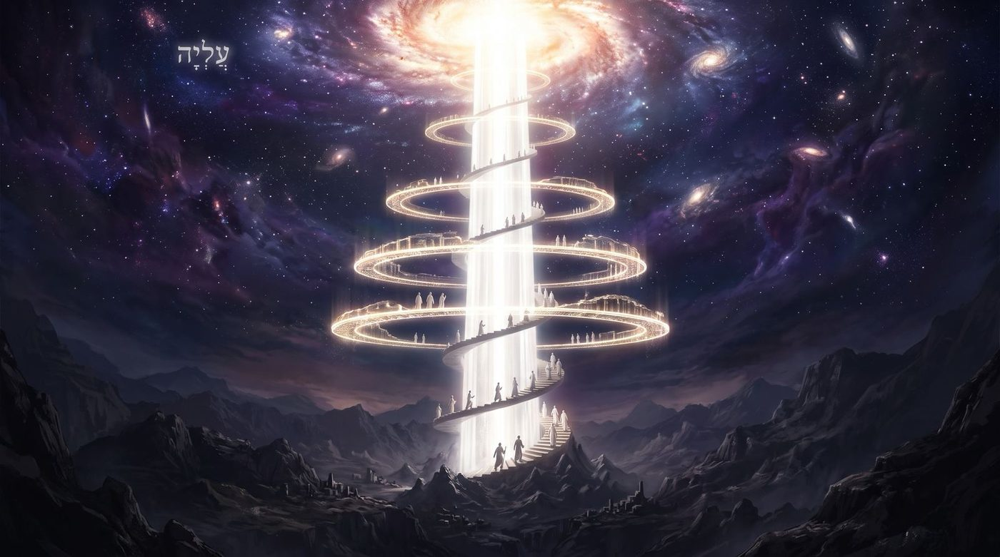
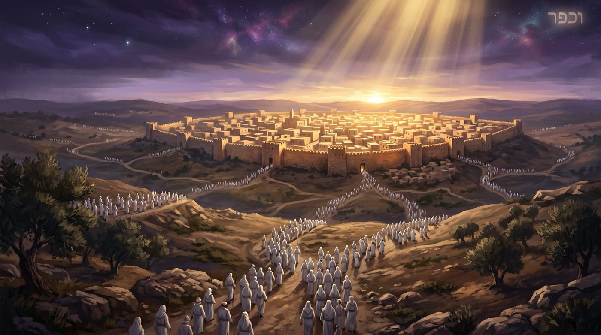

Le point qui n'a pas bougé mais qui revient
Moché ouvre son dernier chant par une comparaison avec la pluie, et le Sfat Emet y lit toute la mécanique du retour, de la Techouva : la pluie ne dépose rien dans la terre, elle réveille une force qui y dormait déjà. De Chabbat Chouva à la Neïla, ce chiour suit une seule question : revenir, est-ce franchir une distance ou se remettre à une place qu'on n'a jamais perdue ?
Moché a cent vingt ans et s’apprête à rejoindre l’Eternel. Il a tout dit : les lois, les avertissements, les bénédictions, la déclaration que la Torah se trouve dans la bouche et dans le cœur de celui qui l'écoute. Avant de bénir le peuple dans la prochaine Paracha, il lui reste un dernier chant, qui forme notre Paracha. Et ce chant, qui va parler d'ingratitude, d'abandon et de jugement, s'ouvre sur une image : יַעֲרֹף כַּמָּטָר לִקְחִי, תִּזַּל כַּטַּל אִמְרָתִי (Yaarof kamatar lik'hi, tizal katal imrati), « que mon enseignement s'épande comme la pluie, que ma parole distille comme la rosée » (Devarim 32:2).
La comparaison est comme souvent surprenante. La tradition dispose d'images fortes pour illustrer la Torah : la lumière, le feu, le pain, l'eau qui désaltère. Chacune décrit un apport. La lumière vient éclairer ce qui était obscur, le pain nourrit qui avait faim, le feu transforme la matière qu'il touche. Toutes supposent un manque au départ et un comblement à l'arrivée. La pluie fonctionne autrement. Elle ne met rien dans la terre, elle ne fabrique pas le blé, elle ne dépose pas la graine, elle n'invente aucune des forces qu'elle fait apparaître mais elle nous enseigne que tout était déjà dans le sol, inerte, en attente. Car, la pluie réveille et révèle le potentiel.
Rachi va dans ce sens quand il glose le verset. Il rapproche la pluie et la Torah par un même effet : כְּמָטָר זֶה שֶׁהוּא חַיִּים לָעוֹלָם (kematar zé chehou 'hayim laolam), « comme cette pluie qui est vie pour le monde ». Et plus loin, sur les ondées du verset, il précise : les vents « soutiennent les herbes et les font grandir, ainsi les paroles de Torah font grandir ceux qui les étudient ». Faire grandir suppose quelque chose qui est là et qui pousse. On ne fait pas grandir ce qui n'existe pas.
Le Sfat Emet, dans son enseignement de l'année 5634 sur notre paracha, tire de cette image ce qui va devenir la clé de tout le chant. Il écrit qu'en chaque juif se trouve une נְקוּדַת חַיּוּת (nekoudat 'hayout), un point de vie, et qu'il suffit d'en réveiller l'intériorité par la Torah. Il poursuit avec l'analogie complète : comme la terre possède en elle la force de produire du grain et des fruits, et que la pluie ne fait qu'éveiller cette force, ainsi l'homme est appelé adam d'après adama, la terre. La Torah ne verse pas dans l'homme une substance qu'il n'avait pas, elle remue ce qui était enfoui.
Nous sommes dans les 10 jours de Techouva. Le jugement de Roch Hachana a eu lieu, Kippour n'est pas encore là, et les heures qui nous séparent de la Neïla n'ont qu'un mot d'ordre : revenir. La plupart d'entre nous se représentent ce retour comme un trajet. Nous nous voyons loin, et il faudrait parcourir la distance. Nous nous voyons abîmés, et il faudrait se reconstruire. Le chant de Moché conteste cette idée dès son premier verset, avant même d'avoir accusé qui que ce soit.
Avec l'aide du Ciel et de nos maîtres, nous verrons que le retour dont parle Chabbat Chouva n'est pas une distance à franchir, ni une âme à modifier. Le Sfat Emet relit la pluie et le Rocher divin, et il affirme que l’ame d'Israël reste à sa place, même chez celui qui a fauté. La haftara donne au retour une adresse intérieure. On s'éloigne sans jamais décider de partir. Et enfin, Kippour, lu par le Ari Z"L, remonte jusqu’à un tel niveau que les cinq privations du jour en sont la conséquence, pas la peine.
• La pluie qui fait revenir l’eau
• Le point qui n'a pas besoin de revenir
• Revenir jusqu'à qui, vers qui ?
• Revenir sans rajout
• Revenir et ne plus s'éloigner
• Revenir chez la Mère
• Le dernier retour
Le Sfat Emet consacre à Chabbat Chouva une série d'enseignements distincts de ceux de la paracha. Celui de l'année 5634 commence par la fin du verset de la haftara, כִּי כָשַׁלְתָּ בַּעֲוֺנֶךָ (ki khachalta baavonekha), « car tu as trébuché par ta faute » (Hochéa 14:2). Il précise aussitôt que cette phrase s'adresse à tout homme d'Israël. Puis vient la ligne qui nous interesse particulièrement dans cette étude : « Et bien qu'il ait fauté et beaucoup mal agi, il doit croire que le point essentiel d'Israël qui est en lui demeure à sa place. » עִיקַּר נְקוּדָה יִשְׂרְאֵלִית שֶׁבּוֹ הִיא בִּמְקוֹמָהּ (ikar nekouda yisreelit chebo hi bimkoma). Le point est resté où il était. Il a tenu, sans avoir eu besoin d'être restauré ni réparé. La faute a produit des dégâts réels, elle a couvert, encrassé, éloigné l'homme de sa propre profondeur, mais elle n'a pas déplacé le point d'un millimètre.

Le Sfat Emet appuie cette affirmation sur un enseignement que le Talmud rapporte au nom de Rech Lakich : “nul ne faute avant qu'un esprit de sottise ne soit entré en lui”. Il en tire une conséquence de vocabulaire. Si la faute suppose un égarement passager de l'esprit, elle décrit un accident survenu à l'homme plutôt qu'une redéfinition de ce qu'il est. Le verset de la haftara, כִּי כָשַׁלְתָּ בַּעֲוֺנֶךָ (Hochéa 14:2), emploie d'ailleurs le verbe trébucher et pas celui de tomber ; la guemara (Yoma 86b), puis le Sfat Emet après elle, y lisent donc un simple obstacle, מִכְשׁוֹל (mikhchol), sur lequel on bute. On trébuche sur un obstacle, on ne trébuche pas hors de soi.
Cette distinction change la vision de la semaine où nous sommes. Si la faute avait déplacé le point, le travail de ces dix jours consisterait à reconstruire, et chacun mesurerait ses chances à l'ampleur de ses dégâts. Celui qui a peu fauté reviendrait vite, celui qui a beaucoup fauté n'aurait pas le temps. Le calcul est intuitif mais me semble faux. Puisque le point demeure intact et à sa place, la distance est la même pour tous, et elle se mesure en profondeur, pas en kilomètres.
Le Sfat Emet n'écrit pas que le point est resté à sa place. Il écrit délibérément qu'il faut le croire, צָרִיךְ לְהַאֲמִין (tsarikh lehaamin). Celui qui vient de passer une année à s'abîmer n'a aucune preuve expérimentale de son intégrité intérieure, et tout son vécu proteste contre cette idée. L'homme se connaît par ses actes, et ses actes le désignent. Croire que le point tient encore revient à faire crédit à une réalité qu'on ne perçoit plus. Ce crédit est le premier geste du retour, et il précède toute réparation. Le mot hébreu de la techouva, lui, ne signifie pas s'améliorer ni progresser, mais revenir. Le vocabulaire du progrès suppose une ligne et une avancée. Le vocabulaire du retour suppose un lieu d'origine d’appartenance. On ne revient que là où l'on a déjà été, et personne ne revient chez un étranger.
La faute salit, elle encrasse, elle recouvre ; elle ne déplace pas le point interne d'Israël.
Le verset qui donne son nom à ce Chabbat pose un problème que la traduction française occulte : שׁוּבָה יִשְׂרָאֵל עַד ה' אֱ-לֹהֶיךָ (Chouva Yisrael ad Hachem Elokekha), « reviens, Israël, jusqu'à Hachem ton D.ieu » (Hochéa 14:2). Le prophète écrit עַד (ad), jusqu'à, alors que le verset suivant écrit אֶל (el), vers : 'קְחוּ עִמָּכֶם דְּבָרִים וְשׁוּבוּ אֶל ה’' (ke'hou imakhem devarim vechouvou el Hachem), « prenez avec vous des paroles et revenez vers Hachem » (Hochéa 14:3). Deux versets consécutifs, qui stipulent deux prépositions différentes pour le même mouvement.
La lecture classique de cette différence passe par Rachi, qui rapporte au nom de Rabbi Meïr une lecture des deux Noms contenus dans le verset. Reviens tant qu'Il est ה' Hachem, c'est-à-dire tant qu'Il siège dans la mesure de miséricorde ; sinon Il sera Elokekha אֱ-לֹהֶיךָ, la mesure de rigueur, et l'avocat se sera changé en accusateur. Le עַד marque ici une urgence de calendrier. Cette semaine porte une fenêtre, qui peut se refermer.
Le Sfat Emet propose une seconde lecture du même mot. Il écrit que עַד ה' אֱ-לֹהֶיךָ désigne « la vie divine qui se trouve en tout homme d'Israël », et il cite la formule que nous prononçons chaque matin : נְשָׁמָה שֶׁנָּתַתָּ בִּי טְהוֹרָה הִיא (nechama chenatata bi tehora hi), « l'âme que Tu as déposée en moi est pure ». Le jusqu'où du retour est ainsi une adresse intérieure. Revenir jusqu'à Hachem ton D.ieu signifie revenir jusqu'à ce que D.ieu a mis en toi et qui n'a pas été souillé.
Il termine sa phrase par une conclusion qui tranche : שֶׁזֶּה עִיקַּר הַתְּשׁוּבָה לָשׁוּב לְהִתְדַּבֵּק בְּעִיקַּר חִיּוּת אֱ-לֹהִי שֶׁבּוֹ (chezé ikar hateChouva lachouv lehitdabek beikar 'hiyout Eloki chebo), « car là est l'essentiel du retour, revenir s'attacher à la vie divine essentielle qui est en lui ».
Les deux prépositions ne disent pas la même chose. Le verset qui dit אֶל, vers, ajoute aussitôt une condition pratique : prenez avec vous des paroles. Ce retour-là passe par un travail extérieur, des mots prononcés, une confession, une démarche qui se voit. Le verset qui dit עַד, jusqu'à, ne demande rien de tel et fixe seulement un terme. L'un décrit la route, l'autre désigne le point d'arrivée. Et le point d'arrivée n'est pas au bout d'un chemin, il est au fond de celui qui marche.
Ce déplacement ne dispense de rien. La confession reste due, les torts commis envers autrui restent à réparer, et le Talmud comme la Hala'ha sont catégoriques sur ce point. Il déplace seulement la question du découragement. Celui qui se demande s'il en a la force se représente une montée. Celui qui accepte la lecture du Sfat Emet cherche plutôt ce qui, en lui, est demeuré intact sous l'année écoulée, et travaille à en retirer ce qui le recouvre.
Le Talmud, dans le traité Yoma, fournit une confirmation inattendue de cette lecture. Rech Lakich y démontre que la techouva transforme les fautes volontaires en simples erreurs, et sa preuve est précisément notre verset : שׁוּבָה יִשְׂרָאֵל עַד ה' אֱ-לֹהֶיךָ כִּי כָשַׁלְתָּ בַּעֲוֺנֶךָ (Yoma 86b). Son raisonnement tient au vocabulaire. Le mot עָוֺן désigne une faute intentionnelle, et pourtant le prophète l'appelle un trébuchement. Le verset qui sert d'adresse au retour est celui-là même qui requalifie la faute volontaire en accident de parcours.
Le retour a une adresse, et elle se situe à l'intérieur de celui qui revient.
Le quatrième verset du chant est l'un des plus cités de la Torah : הַצּוּר תָּמִים פָּעֳלוֹ כִּי כָל־דְּרָכָיו מִשְׁפָּט (Hatsour tamim paolo ki khol derakhav michpat), « le Rocher, Son œuvre est parfaite, car toutes Ses voies sont jugement » (Devarim 32:4). On le récite aux enterrements, et on l'entend comme une acceptation de la justice divine devant l'incompréhensible. Rachi lit d'ailleurs en ce sens : même lorsqu'Il amène le châtiment sur ceux qui transgressent Sa volonté, Il ne l'amène pas par débordement mais par jugement.
Le Sfat Emet, dans le même enseignement de 5634, applique ce verset à un tout autre domaine. Il pose le paradoxe suivant : si les justes soutiennent le monde et l'achèvent, comme l'enseigne la tradition, alors l'œuvre de la création serait inachevée et attendrait leur contribution. Or le verset affirme que l'œuvre du Rocher est תָּמִים (tamim), entière, sans manque. Il cite alors le verset de Iyov, מִי הִקְדִּימַנִי וַאֲשַׁלֵּם (mi hikdimani vaachalem), « qui M'a devancé pour que J'aie à le payer », qui exclut que l'homme apporte au Créateur quelque chose que Celui-ci n'aurait pas d'abord donné.
Sa réponse tient en une phrase : « tout ce qui est demandé à l'homme, c'est qu'il se tienne dans sa position véritable, qu'il redresse ses actes et ses pensées ; et lorsqu'il se tient à sa place, la force de vie qui est en lui s'éveille d'elle-même ».
Sa formule est précise : לְהִתְיַשֵּׁב בַּמָּקוֹם הָרָאוּי (lehityachev bamakom haraouï), se poser, s'asseoir, s'installer à la place qui convient. Le verbe appartient au vocabulaire de la position plutôt qu'à celui de l'effort ou de la construction. Il décrit un ajustement. Le Sfat Emet donne aussitôt une analogie tirée de la nature : les créatures se multiplient et emplissent le monde, et pourtant aucune n'ajoute quoi que ce soit à la puissance qui les fait se multiplier. Elles se contentent de se poser là où elles doivent être, selon ce que dit Yechayahou du monde, לֹא־תֹהוּ בְרָאָהּ לָשֶׁבֶת יְצָרָהּ (lo tohou beraah lachévet yetsarah), « Il ne l'a pas créé pour le chaos, Il l'a formé pour être habité ».
Commentant ce לָשֶׁבֶת (lachévet), habiter, le Sfat Emet nous explique enfin : « ainsi dans le service du Créateur, lorsque l'homme s'attache au lieu qui lui revient, cela s'appelle habiter, שֶׁשָּׁב לִמְקוֹמוֹ לְשׁוֹרְשׁוֹ (chechav limkomo lechorcho), car il est revenu à sa place, à sa racine ».
L'enseignement est immense : habiter et revenir partagent la même racine hébraïque. Celui qui se remet à sa place ne construit pas une maison nouvelle, il rentre dans la sienne.
Le Sfat Emet ajoute encore, à ce titre, une remarque sur l'expression talmudique bien connue, יָגַעְתִּי וּמָצָאתִי תַּאֲמִין (yagati oumatsati taamin), « si l'on te dit : j'ai peiné et j'ai trouvé, crois-le ». Le verbe trouver le gêne, puisqu'on ne trouve que ce qui existait avant la recherche. Il précise donc : j'ai trouvé à l'intérieur du corps de l'homme. La peine ne produit pas le trésor, elle le déterre. Ce que l'étude révèle se trouvait dans l'étudiant avant qu'il n'ouvre le livre.
Se remettre en place plutôt que se refaire : le retour est un ajustement de position.
Si le point demeure et si l'homme n'a qu'à se replacer, une question devient urgente. Comment a-t-on quitté cette place ?
Le verset le plus connu du chant de Moché de notre Paracha tient en quatre mots : וַיִּשְׁמַן יְשֻׁרוּן וַיִּבְעָט (Vayichman Yechouroun vayivat), « Yechouroun s'est engraissé et il a regimbé (il s’est montré récalcitrant) » (Devarim 32:15). Le nom employé yechouroun est un nom tendre, formé sur la racine de la droiture yachar. Les verbes qui suivent appartiennent au vocabulaire animal : la bête bien nourrie rue contre celui qui la nourrit. Et la suite du verset énonce la conséquence sans jamais mentionner de choix : וַיִּטֹּשׁ אֱ-לוֹהַּ עָשָׂהוּ (vayitoch Eloka assahou), « il a délaissé le D.ieu qui l'a fait ».
Le Sfat Emet, dans son enseignement de 5637, refuse la lecture facile de ce verset. Il écrit que l'engraissement dont il est question ne concerne pas la viande et le vin. Il veut lire un peuple qui s'est engraissé de mitsvot et de bonnes actions. Car, le danger ne tient pas à la nature de ce qui remplit l'homme, mais au fait qu'il oublie que tout cela lui vient d'une force supérieure. Il cite la fin du verset, אֱ-לוֹהַּ עָשָׂהוּ, le D.ieu qui l'a fait, et conclut que c'est par cet oubli seul que l'homme tombe de son niveau.
Quelques versets plus loin, le chant nomme le mécanisme : צוּר יְלָדְךָ תֶּשִׁי, וַתִּשְׁכַּח אֵ-ל מְחֹלְלֶךָ (Tsour yeladekha téchi, vatichka'h E-l me'holelekha), « le Rocher qui t'a enfanté, tu l'as négligé, et tu as oublié le D.ieu qui t'a mis au monde » (Devarim 32:18). Rachi glose le premier mot par un seul terme : תִּשְׁכַּח (tichka'h), tu oublies. Il rapporte ensuite la lecture de nos maîtres, qui entendent dans תֶּשִׁי un affaiblissement, comme si l'homme affaiblissait la force divine disposée à lui faire du bien.
Personne, dans tout le chant, ne décide de partir. On s'engraisse, on s'installe, on néglige, on oublie. Ce sont des verbes de lenteur, de glissement. L'éloignement dont la Torah parle se produit sans franchissement de seuil, sans moment identifiable où l'on aurait pu se retenir.
Cette description a une conséquence directe sur le travail de ces jours. Celui qui cherche dans son année la décision fautive qui l'a éloigné ne la trouvera peut-être pas. Il cherche un événement alors qu’il doit analyser le glissement. Le mouvement inverse ressemble au premier : revenir ne se joue pas non plus dans une décision spectaculaire, mais dans une série de replacements minuscules et répétés.
Rachi ajoute sur אֵ-ל מְחֹלְלֶךָ une précision que nous retrouverons au chapitre suivant. Il traduit par « celui qui te fait sortir du ventre », et rattache ce mot au vocabulaire de l'enfantement. Le verset qui décrit l'oubli emploie donc deux fois l'image de la naissance : le Rocher t'a enfanté, D.ieu t'a mis au monde. L'homme qui s'éloigne oublie d'abord d'où il est sorti.
On ne franchit aucun seuil : on s'engraisse, on s'installe, on oublie d'où l'on est sorti.
Le maître de la mystique juive des 500 dernières années, le Ari Z"L consacre au jour de Kippour une section entière du Pri Etz Haim, divisée en cinq chapitres. Le cinquième chapitre énonce ce que le jour opère, et la formule est directe : « ce qui se produit le jour de Kippour, c'est qu'elle monte jusqu'au Keter d'Ima (la couronne de la mère), et se tient à son niveau, et prend de là les rigueurs adoucies depuis la Mère elle-même, sans passer par Zeïr Anpin (l’attribut masculin)».
Il faut traduire ce vocabulaire. Les enseignements mystiques décrivent les attributs divins par lesquels le monde reçoit. מַלְכוּת (Malkhout), la royauté, désigne l'attribut le plus bas, celui qui touche notre monde et qui reçoit de tous les autres. בִּינָה (Bina), l'intelligence, désigne un attribut très supérieur, que la tradition mystique appelle אִמָּא (Ima), la Mère, parce que tout ce qui descend ensuite naît d'elle. Entre les deux se trouvent des degrés intermédiaires, désignés ici par זְעֵיר אַנְפִּין (Zeïr Anpin), qui transmettent d'ordinaire ce que la Mère donne.
Le reste de l'année, la Mal’hout reçoit par cette chaîne d'intermédiaires. Le Ari Z"L enseigne qu'au jour de Kippour, elle ne reçoit pas ainsi. Elle monte, jusqu'en haut, jusqu'au sommet de Bina, pour y recevoir directement ce qui adoucit les rigueurs de cette transmission. Il ajoute une remarque sur l'ordre des offices : elle commence à monter pendant la nuit de Kippour, elle atteint le Keter d'Ima (le niveau le plus haut de la mère) à la répétition de Moussaf, et Zeïr Anpin, qui lui est pourtant supérieur, ne commence à monter qu'ensuite, à partir de Min'ha, jusqu'à la Neïla, où la Mal'hout, Zeïr Anpin et Ima se retrouvent réunis au même niveau. L'ordre habituel est donc renversé : ce jour-là, c'est le degré le plus bas qui monte le premier, et ceux qui lui transmettent d'ordinaire ne le suivent qu'après. Il précise enfin pourquoi la journée se déroule dans cet ordre : כִּי עִיקַּר יוֹם זֶה לְצוֹרֶךְ בִּנְיַן הַמַּלְכוּת וְתִיקּוּנָהּ מֵאִמָּא עִילָּאָה דִּילָהּ, « car l'essentiel de ce jour tient à l'édification de la Mal’hout et à sa réparation depuis sa Mère supérieure ».

Ce que décrit le Ari Z"L reprend le geste que le Sfat Emet dégageait du chant. Rien de neuf n'est fabriqué ce jour-là. Ce qui est en bas remonte jusqu'à sa source et reçoit de là, sans médiation, ce qu'il recevait d'ordinaire par étapes.
On répare en retournant à l'origine, pas en ajoutant un supplément. La Techouva, se lit dans la tradition hassidique et mystique, Tachouv - hé, le retour du hé, de la Mal'hout, signifiant ainsi ce retour du niveau de la royauté feminine au niveau maternelle. Nous expliquerons avec l’aide de D.ieu comment Souccot et Shemini Atseret manifestent l’union qui se déclenche grâce à ce retour.
Le lien avec la paracha passe par Rachi. Le verset qui décrit l'oubli parle du Rocher יְלָדְךָ, qui t'a enfanté, et du D.ieu מְחֹלְלֶךָ, qui t'a fait sortir du ventre. Le vocabulaire de l'éloignement est un vocabulaire de naissance oubliée. Et le jour qui répare cet éloignement consiste, dans la description du Ari Z"L, à remonter jusqu'à IMA, pour recevoir d'elle directement. Le juif qui a oublié de quel ventre il est sorti est ramené ce jour-là jusqu'à ce ventre.
On le sent le jour même. Kippour est long, et sa longueur est ordonnée. La journée n'est pas une série d'efforts additionnés, dont l'accumulation finirait par emporter le pardon. C'est une montée, office après office, chaque étage marqué, jusqu'à ce que la Neïla trouve tout le monde en haut. Celui qui aborde le jeûne comme une remontée y trouve un ordre qui le porte et l’accompagne.
Certes, nous expliquons d'ordinaire le jeûne de Kippour par l'affliction. Le texte de la Torah emploie le mot, וְעִנִּיתֶם אֶת־נַפְשֹׁתֵיכֶם (veïnitem et nafchotekhem), et la tradition en déduit cinq privations : manger et boire, se laver, s'enduire, chausser le cuir, les rapports conjugaux. L'explication qui vient naturellement à l'esprit fait de ces privations un châtiment, ou au mieux un exercice : on se prive pour se détacher du corps, pour ressembler aux anges, pour payer quelque chose.
Le troisième chapitre du Chaar Yom HaKipourim renverse cette explication. Le Ari Z"L y écrit que durant toute l'année, la Mal’hout recevait de la Bina elle-même ce qui correspond aux cinq domaines : le manger et le boire, le lavage, l'onction, le rapport à la matière (les chaussures en cuir et les rapports). Puis vient le moment de Kippour, où elle doit recevoir l'adoucissement des rigueurs sans passer par les intermédiaires habituels, et où elle doit donc monter plus haut qu'eux, jusqu'à la Bina même. Et il conclut : une fois qu'elle s'y trouve, « elle ne se nourrit plus de la Bina, mais seulement du lieu d'où la Bina elle-même mange, boit et se lave ».
« et les cinq choses premières sont désormais annulées, car elles lui viennent d'en haut, d'un lieu élevé ». Ce qui parvient depuis ce lieu ne relève plus d'aucune des catégories que nous connaissons, précise-t-il, כִּי כּוּלָּם בְּסוֹד הֶבֶל הַפֶּה לְבַד (ki koulam besod hével hapé levad), car tout y tient au secret du souffle de la bouche seul. Et de là, le Ari Z"L tire la conclusion pratique : וְלָכֵן אֵין אָנוּ יְכוֹלִין לֶאֱכוֹל וְלִשְׁתּוֹת (velakhen ein anou yekholin leekhol velichtot), « et c'est pourquoi nous ne pouvons ni manger ni boire ».
Nous croyons que nous nous privons afin de nous élever. Le Ari Z"L enseigne que nous ne mangeons pas parce que nous sommes déjà remontés, en un lieu où la nourriture d'en bas n'a plus cours. Les cinq privations sont le signe d'un état atteint plutôt que le prix à payer pour l'atteindre. Elles ne construisent pas la sainteté du jour, elles en découlent.
C’est le même geste depuis le début. La pluie ne dépose rien : elle réveille. Le point n'a pas bougé : il attend. Kippour n'ajoute rien : il fait remonter. Le jeûne n'élève pas. Il accompagne. Pour celui qui jeûne, la faim du milieu d'après-midi, la fatigue, la tête lourde restent. Ce qui change, c'est ce qu'on en fait. Prise pour une peine, la privation appelle le décompte des heures. Lue comme le Ari Z"L la décrit, elle devient l'indice d'une position : si la nourriture d'en bas n'a plus cours aujourd'hui, c'est que le lieu où nous nous tenons n'est plus le lieu habituel.
Le Sfat Emet écrit qu'Israël jeûne dans la joie, parce que le peuple attend de revenir à ce premier degré qui était le sien. Le jeûne se lit chez lui comme une espérance de retour plutôt que comme une contrition.
Le jour de Kippour ne fabrique rien : il fait remonter la royauté jusqu'à sa Mère. Nous ne jeûnons pas pour monter : nous ne mangeons pas, parce que nous sommes montés.
Le chant s'achève sur un verset dont le dernier mot appartient au vocabulaire du jour que nous attendons : הַרְנִינוּ גוֹיִם עַמּוֹ... וְכִפֶּר אַדְמָתוֹ עַמּוֹ (Harninou goyim amo... vekhiper admato amo), « Nations, chantez la louange de Son peuple... et Il pardonnera à Sa terre, à Son peuple » (Devarim 32:43). Le verbe וְכִפֶּר (vekhiper) porte la racine de Kippour. La paracha que nous lisons entre le jugement et le pardon (ou parfois après kippour) se termine sur le mot même du pardon.
La position de ce verset dit quelque chose de l'horizon. Tout ce que le chant a décrit, l'engraissement, l'oubli, l'éloignement, le jugement, se referme sur un verbe de réparation qui s'étend à la terre et au peuple. Et ce verbe arrive après que les nations ont été appelées à chanter. La réparation finale débordera celui qui l'a méritée.
Si le point demeure à sa place chez celui qui a fauté, alors il demeure chez tous. Y compris chez ceux dont nous avons cessé d'attendre quoi que ce soit. Y compris chez celui qui a passé sa vie à s'en éloigner. Car, la promesse messianique ne consiste pas à créer un peuple nouveau. Elle consiste à révéler ce qui était demeuré intact sous des siècles d'oubli, et à le révéler chez chacun en même temps.

Le Ari Z"L décrivait la montée du jour de Kippour comme un mouvement qui commence en bas et gagne progressivement les étages, jusqu'à ce que tout se retrouve ensemble au moment de la Neïla. Ce que le jour opère pour une âme, le temps messianique l'opérera pour l'ensemble. Le plus bas remontera jusqu'à sa source, et atteindra un niveau où la matière n'aura plus de prise.
Cela console, concrètement, cette semaine. Nous abordons souvent Kippour avec la conscience de ce que nous n'avons pas réparé, et de ce que nous ne réparerons peut-être pas cette année. Cette conscience est juste, et elle cesse d'être décourageante dès lors que le travail n'est pas de produire un homme neuf avant la Neïla, mais de revenir se poser à l'endroit qui nous revient. Cet endroit a tenu toute l'année, il tiendra encore l’année suivante, jusqu’aux jours messianniques.
| הַרְנִינוּ גוֹיִם עַמּוֹ | Nations, chantez la louange de Son peuple |
|---|---|
| וְכִפֶּר אַדְמָתוֹ עַמּוֹ | et Il pardonnera à Sa terre, à Son peuple |
Devarim 32:43
Chabbat Chalom et Guemar 'Hatima Tova !
Par B.A., à Saint-Mandé, 9 Tichri 5787 / 20 septembre 2026
Yehi Ratson. Que nous soit donnée, en ces jours qui nous séparent de la Neïla, la confiance de croire que le point déposé en nous est demeuré à sa place, et que rien de ce que nous avons fait cette année ne l'a déplacé.
Que le jour de Kippour nous trouve remontés jusqu'à la source dont nous sommes sortis, et que ce que nous recevrons ce jour-là nous vienne directement, sans intermédiaire et sans retard.
| Torah | Talmud |
|---|---|
| Devarim 32:1-2, l'ouverture du chant et la pluie ; 32:4, le Rocher dont l'œuvre est entière ; 32:6, le Père qui t'a acquis ; 32:15, Yechouroun engraissé ; 32:18, le Rocher oublié ; 32:36, le jugement lorsque la force s'épuise ; 32:43, le dernier mot du chant. Hochéa 14:2-3, la haftara de Chabbat Chouva. | Yoma 86b, l'enseignement de Rech Lakich qui requalifie la faute volontaire en trébuchement. |
| Rishonim | Mystique |
| Rachi sur Devarim 32:2, la Torah comme pluie qui fait grandir ; sur 32:4, le châtiment par jugement et la rétribution du monde à venir ; sur 32:18, téchi lu comme l'oubli, et E-l me'holelekha comme celui qui fait sortir du ventre. Rachi sur Hochéa 14:2, au nom de Rabbi Meïr, sur les deux Noms du verset. | Ari Z"L, Pri Etz Haim, Chaar Yom HaKipourim 3, les cinq privations comme conséquence de la remontée et la nourriture du souffle de la bouche ; chapitre 5, la montée de la Malkhout jusqu'au Keter d'Ima et l'ordre des offices du jour. |
| Hassidout | |
| Sfat Emet, Haazinou 5634, la pluie qui réveille le point de vie, se poser à la place qui convient, revenu à sa place et à sa racine ; Haazinou 5637, l'engraissement par les mitsvot ; Chabbat Chouva 5634, le point d'Israël demeuré à sa place, ad Hachem comme la vie divine intérieure ; Yom Kippour 5641 et 5657, le jeûne dans la joie et l'attente du premier degré. |